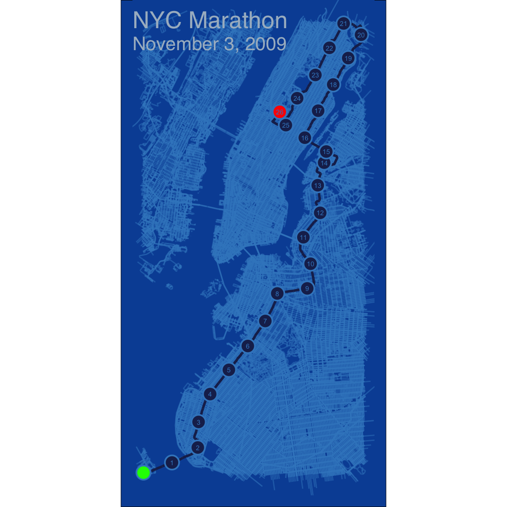
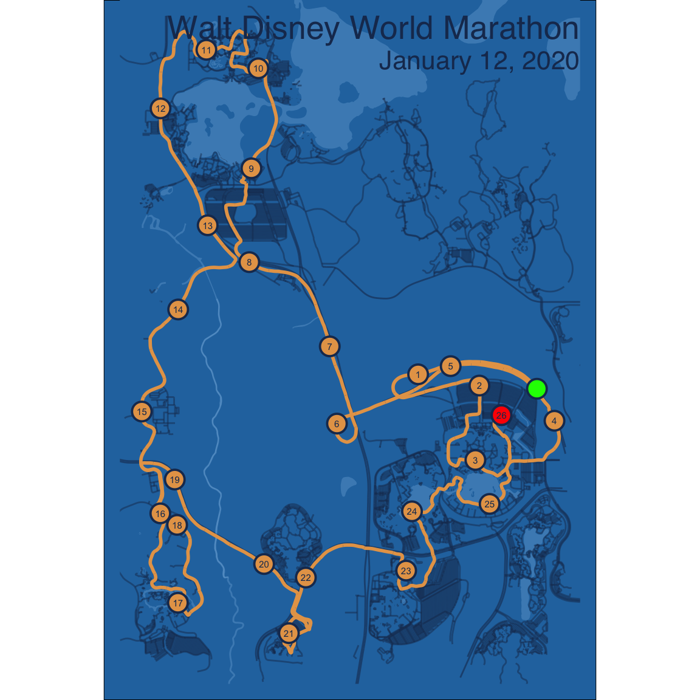

library(tidyverse)
library(osmdata)
library(tmaptools)
library(XML)
palette.nyc <- c(
background = '#0850A4',
water = '#0850A4',
streets = '#3D88C7',
small_streets = '#3D88C7',
rivers = '#0850A4',
route = '#1B295A',
labels = '#3D88C7',
title = '#A8BACA'
)
gpx.file <- '2019-11-03-NYC-Marathon.gpx'
palette <- palette.nyc
title <- 'NYC Marathon'
subtitle <- 'November 3, 2009'
title.hjust <- 0 # 0 = left align; 1 = right aling
distance <- "mi" # Distance unit, one of: "m", "km", "mi", and "ft"Map my run in R
R
First, I want to give a plug to the RStats Strava Running Club. If you are into running, it is a great group that provides lots of support.
This post is inspired by this streetmaps tutorial over at ggplot2tutor.com on creating map artwork/posters. This post shows how to overlay running (which could be biking) routes.
The key for this to work is to get access to GPX (GPS Exchange format) files. I use an Apple watch to track my runs and the HealthFit App to sync my runs to Strava and Dropbox (note there are a lot of export options) where it will upload GPX files. For this post, I extracted two GPX files for when I ran the NYC Marathon in 2019 and the Disney Marathon in 2020.
To begin, I load the necessary R packages and define some variables so that the script can easily be modified for other maps.
The following R code reads in the GPX file (which is an XML file) and converts it to a matrix of longitude and latitude coordinates. The bb variable defines the minimum bounding rectangle that encompasses the entire route. This will define the bounds of the street data we will download.
gpx <- XML::htmlTreeParse(gpx.file,
error = function (...) {}, useInternalNodes = T)
coords <- xpathSApply(gpx, path = "//trkpt", xmlAttrs)
lats <- as.numeric(coords["lat",])
lons <- as.numeric(coords["lon",])
path <- data.frame(x = lons, y = lats)
bb <- matrix(c(min(path$x), min(path$y), max(path$x), max(path$y)),
nrow = 2, ncol = 2,
dimnames = list(c('x','y'), c('min', 'max')))
bb min max
x -74.06163 -73.92439
y 40.60176 40.81475The next chunk calculates the distance between each coordinate and the cumulative sum/distance. Note that this is an inefficient chunk since I used a for loop to calculate the distances.
path$distance <- 0
for(i in 2:nrow(path)) {
# Probably shouldn't use a loop, this is slow. Not sure what to use instead.
path[i,]$distance <- as.numeric(
approx_distances(unlist(path[i - 1,,drop=TRUE]), unlist(path[i,,drop=TRUE]),
target = distance, projection = 4326)
)
}
path$cum_distance <- cumsum(path$distance)Next, we create a separate data frame for the mile markers. We could round up or down here. For NYC, my watch registered just under 26 miles so to ensure a 26 mile marker is shown, we will round up here. I presume the GPS lost accuracy when running on the lower level of bridges and/or through the buildings.
# markers <- path[!duplicated(floor(path$cum_distance)),][-1,]
markers <- path[!duplicated(ceiling(path$cum_distance), fromLast = TRUE),][-1,]The next block of R code (which is largely copied from the ggplot2tutor tutorial) downloads map data from OpenStreet Map.
streets <- bb %>%
opq() %>%
add_osm_feature(key = "highway",
value = c("motorway", "primary", "trunk",
"secondary", "tertiary")) %>%
osmdata_sf()
small_streets <- bb %>%
opq() %>%
add_osm_feature(key = "highway",
value = c("residential", "living_street",
"unclassified",
"service", "footway")) %>%
osmdata_sf()
river <- bb %>%
opq() %>%
add_osm_feature(key = "waterway", value = "river") %>%
osmdata_sf()
water <- bb %>%
opq() %>%
add_osm_feature(key = "natural", value = c('water')) %>%
osmdata_sf()Now that the data is downloaded, we can begin building the map using ggplot2.
map <- ggplot() +
geom_sf(data = water$osm_multipolygons,
inherit.aes = FALSE,
fill = palette['water'],
color = NA,
alpha = .3) +
geom_sf(data = streets$osm_lines,
inherit.aes = FALSE,
color = palette['streets'],
size = .3,
alpha = .6) +
geom_sf(data = small_streets$osm_lines,
inherit.aes = FALSE,
color = palette['small_streets'],
size = .1,
alpha = .5) +
geom_sf(data = river$osm_lines,
inherit.aes = FALSE,
color = palette['rivers'],
size = .2,
alpha = .3) +
geom_path(data = path, aes(x = x, y = y),
color = palette['route'],
size = 1) +
geom_point(data = markers, aes(x = x, y = y),
inherit.aes = FALSE,
color = palette['labels'],
fill = palette['route'],
shape = 21, stroke = 1, size = 5) +
geom_point(data = path[1,], aes(x = x, y = y),
inherit.aes = FALSE,
color = palette['labels'],
fill = 'green',
shape = 21, stroke = 1, size = 5) +
geom_point(data = path[nrow(path),], aes(x = x, y = y),
inherit.aes = FALSE,
color = palette['labels'],
fill = 'red',
shape = 21, stroke = 1, size = 5) +
geom_text(data = markers, aes(x = x, y = y, label = ceiling(cum_distance)),
inherit.aes = FALSE,
color = palette['labels'],
size = 2) +
coord_sf(xlim = bb[1,],
ylim = bb[2,]) +
theme_void() +
theme(plot.background = element_rect(fill = palette['background']))The last modifies the them and adds a title. For the poster I printed, I excluded the title and instead added the marathon logo in Photoshop.
map + ggtitle(title,
subtitle = subtitle) +
theme(panel.background = element_rect(fill = palette['background'], color = palette['background']),
panel.spacing = margin(0,0,0,0),
plot.margin = margin(-45,10,10,10),
plot.title = element_text(color = palette['title'],
size = 20,
hjust = title.hjust, vjust = -10,
family = 'Helvetica'),
plot.subtitle = element_text(color = palette['title'],
size = 16,
hjust = title.hjust, vjust = -12,
family = 'Helvetica'))
The ggsave will save the map to a file.
ggsave(filename = paste0(gsub(' ', '_', title), '.png'), width = 8)With a few modifications to the variables set above, we can easily create another map for another race.
palette.disney <- c(
background = '#2775AE',
water = '#92C0E6',
streets = '#1A365D',
small_streets = '#1A365D',
rivers = '#92C0E6',
route = '#E6A356',
labels = '#1A365D',
title = '#1A365D'
)
gpx.file <- '2020-01-12-Disney-Marathon.gpx'
palette <- palette.disney
title <- 'Walt Disney World Marathon'
subtitle <- 'January 12, 2020'
title.hjust <- 1 # 0 = left align; 1 = right aling
distance <- "mi" # Distance unit, one of: "m", "km", "mi", and "ft"